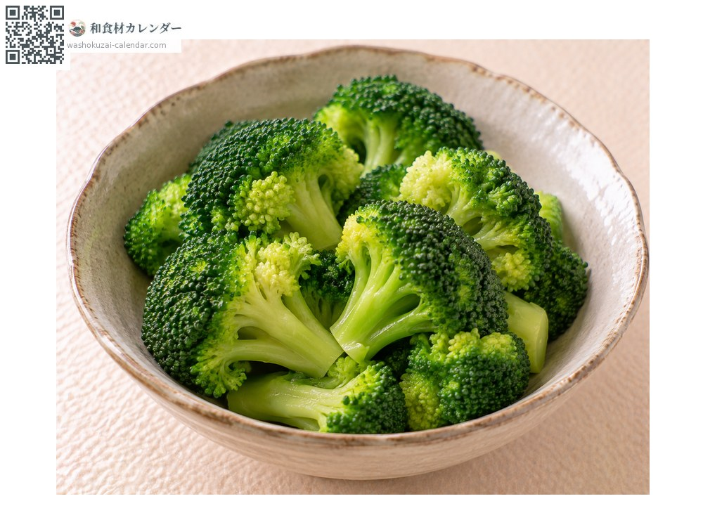
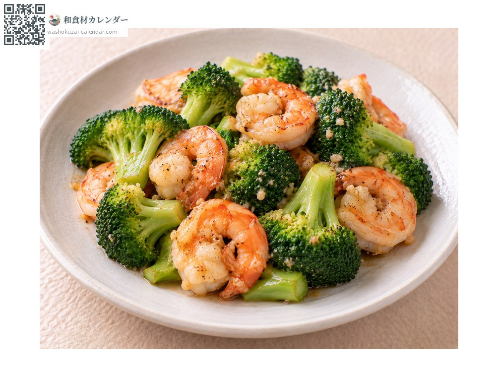
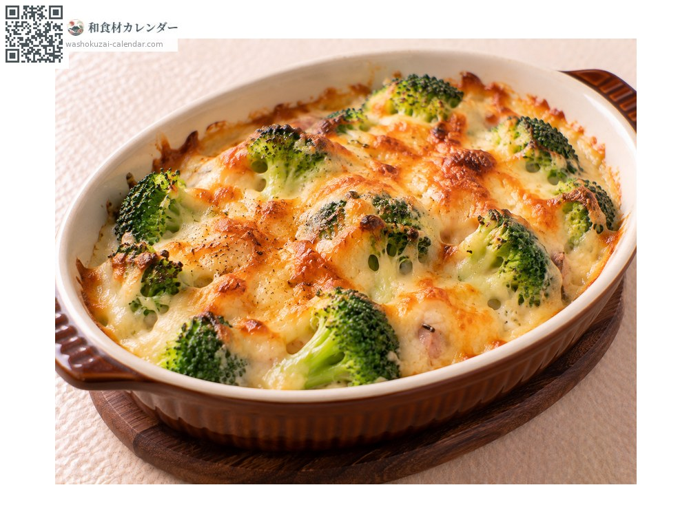
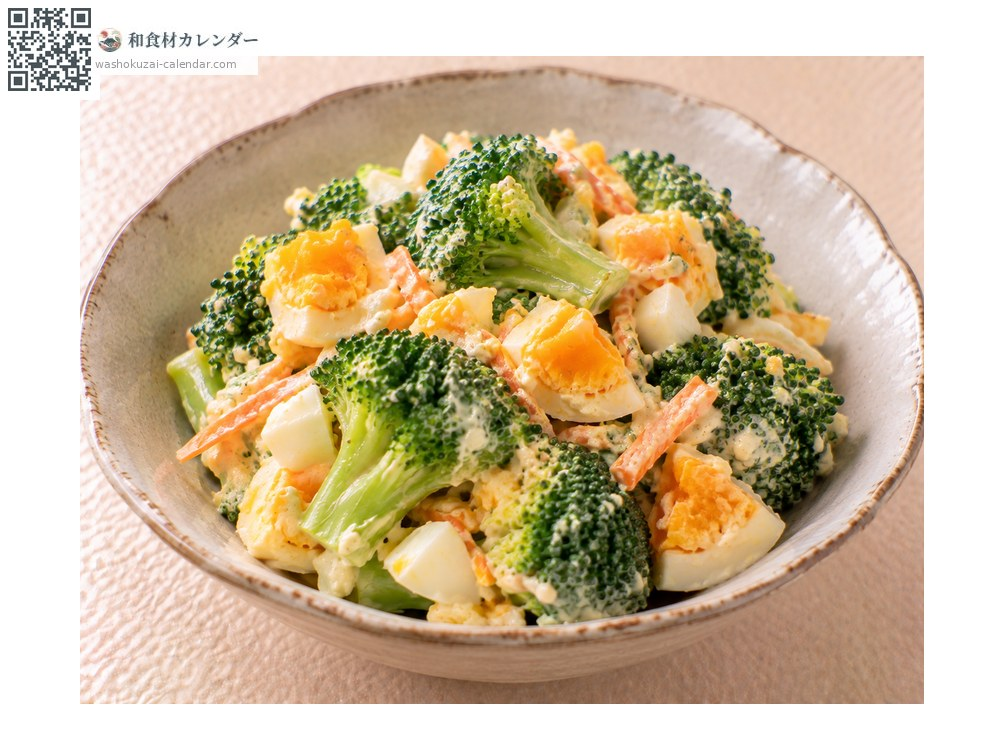

ผัก
บรอกโคลี
ブロッコリー ぶろっこりー
อร่อยที่สุดในเดือน ม.ค., ก.พ., พ.ย., ธ.ค.

ช่วงที่อร่อยที่สุด
ม.ค.
ก.พ.
มี.ค.
เม.ย.
พ.ค.
มิ.ย.
ก.ค.
ส.ค.
ก.ย.
ต.ค.
พ.ย.
ธ.ค.
ช่วงอร่อยที่สุดมีจำหน่าย
วิธีปรุง

ลวกน้ำเกลือ
ลวกให้ยังกรอบ ก้านปอกเปลือกแล้วก็กินได้

ผัด
ลวกก่อนแล้วจึงผัด สัมผัสจะยังอยู่

กราแตง
เข้ากับชีสได้ดี และช่วยเพิ่มสีสัน

สลัด
ลวกแล้วทำให้เย็น คลุกมายองเนสหรืองา
วิธีเลือก
ดอกตูมแน่นและเขียวเข้ม รอยตัดที่ก้านไม่กลวง
วิธีเก็บรักษา
ใส่ถุงทั้งที่ยังดิบแล้วตั้งขึ้นแช่เย็น ที่ลวกแล้วแช่แข็งก็ได้
แหล่งผลิตหลัก
เกร็ดน่ารู้
ส่วนที่กินคือกลุ่มดอกตูมที่ยังไม่บาน ถ้าปล่อยไว้จะบานเป็นดอกสีเหลือง ปี 2026 รัฐบาลญี่ปุ่นเพิ่มเข้าในรายการผักกำหนด จัดอยู่ในระดับเดียวกับกะหล่ำปลีและหัวไชเท้า ก้านก็มีคุณค่าทางอาหาร ไม่ต้องทิ้ง
วัตถุดิบที่อร่อยที่สุดในช่วงเดียวกัน
 ดอกตูมฟุกิ
ดอกตูมฟุกิ ดอกผักกาดก้านอ่อน
ดอกผักกาดก้านอ่อน เซริ (ผักชีล้อมญี่ปุ่น)
เซริ (ผักชีล้อมญี่ปุ่น) กะหล่ำปลี
กะหล่ำปลี ผักกาดขาว
ผักกาดขาว กะหล่ำดาว
กะหล่ำดาว ดอกกะหล่ำ
ดอกกะหล่ำ ผักโขมญี่ปุ่น
ผักโขมญี่ปุ่น